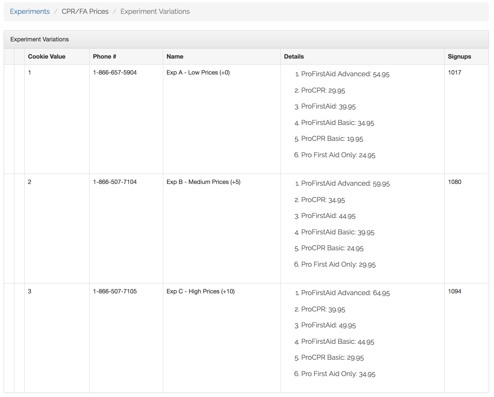

A/B Cookie-Based Testing Platform
- Built tables and back-end screens for creating experiments with multiple variations to test different prices of products.
- Users on targeted pages receive a cookie that assigns them to one of the variations.
- I kept track of views, signups, purchases, and revenue, and gave real-time stats on signup percent and average revenue per user to easily determine which pricing structure was optimal.
- Each experiment variation can have a different phone number associated with it (and information is passed through to chat), so if customers call or chat, we know which price they are seeing.
- To minimize price confusion, the product pricing functions were all modified to take cookies and experiments into account.
- I also pass a unique identifier across sites (tacking it onto crossover links through javascript, so we can still cache pages) so we can keep multiple cookies / customer-specific pricing information across all of our domains.
